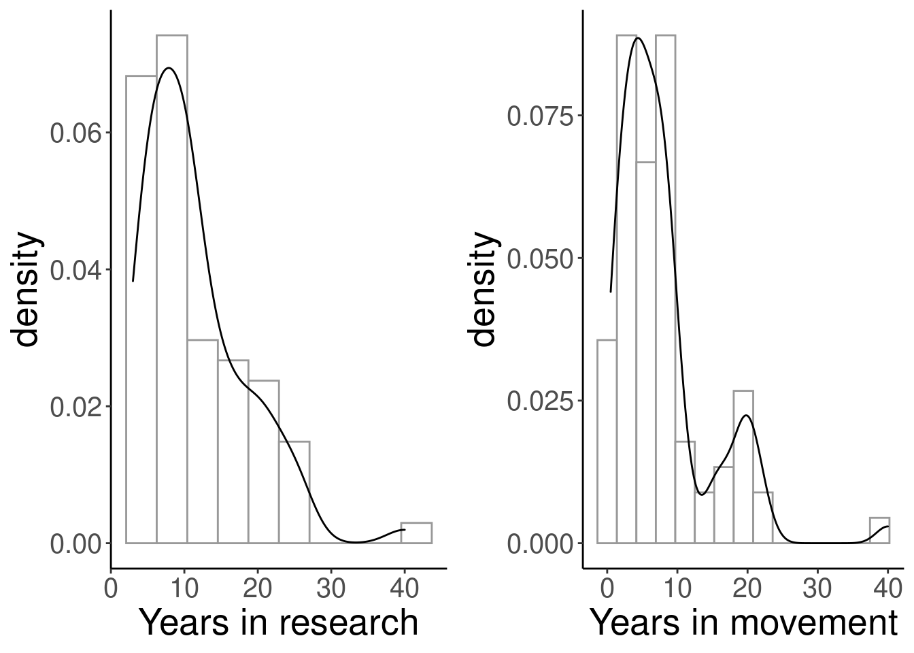
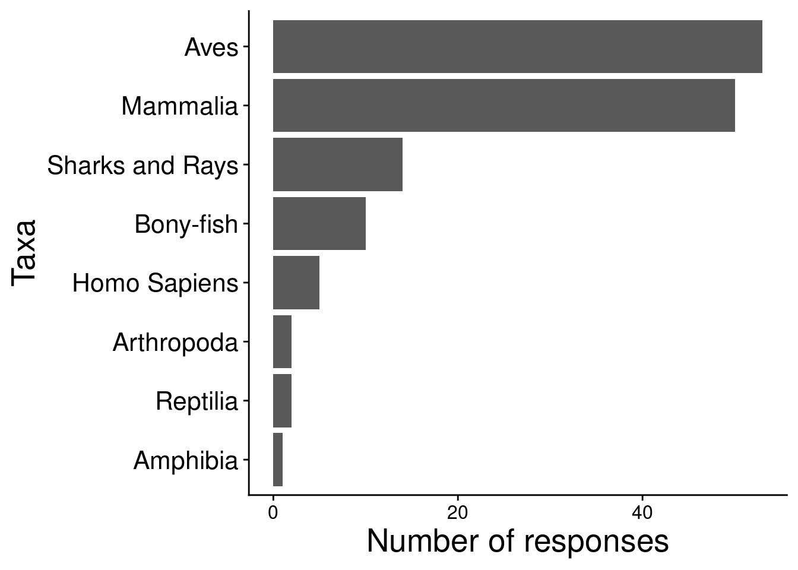
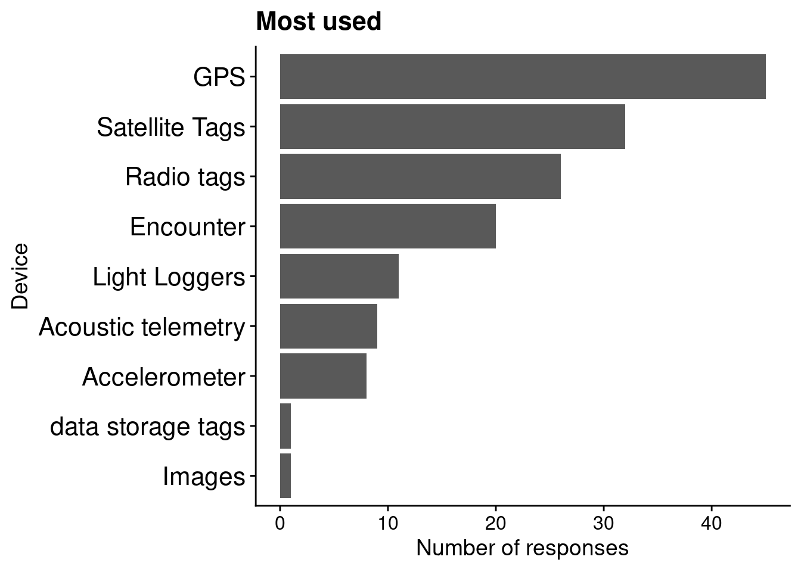
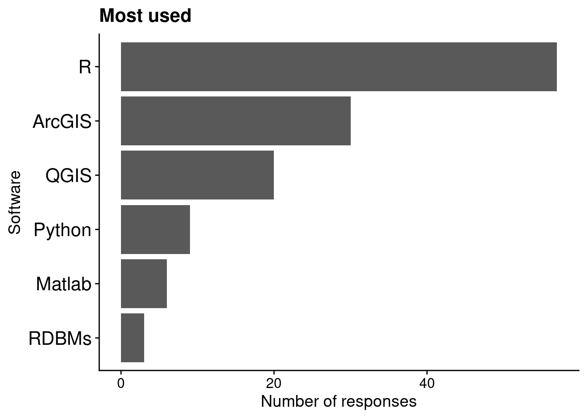
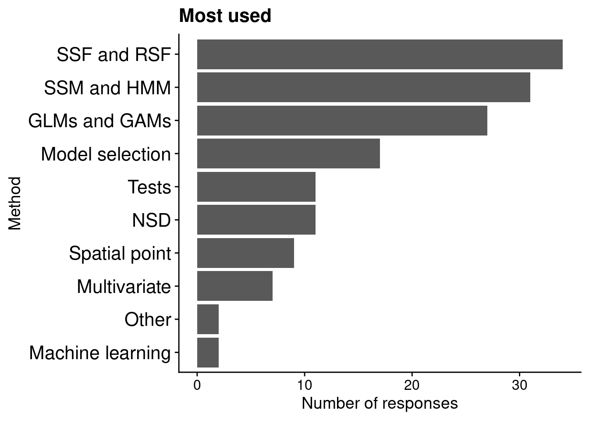

4 Survey about movement ecology
4.1 Description of the survey
As a complementary source of information for our review, we elaborated a survey to get the perspectives of movement ecologists about the field and how it is evolving.
The exact formulation of the questions in the survey can be downloaded here.
4.2 Participation in the survey
The survey was designed to be completely anonymous. There was no previous selection of the participants and no probabilistic sampling was involved. The survey was advertised by mailing lists (r-sig-geo and r-sig-ecology), individual emails to researchers, the lab’s website https://mablab.org, the Gordon Research Conference and Seminar on Movement Ecology of Animals, and Twitter. It took place during the Winter/Spring of 2019.
The survey got exemption from the Institutional Review Board at University of Florida (IRB02 Office, Box 112250, University of Florida, Gainesville, FL 32611-2250).
A total of 82 people participated in the survey, and 61 answered at least one question concerning the field (and not just their years of experience in research or the field). No question was mandatory, so participants could opt to not answer some questions.

We first asked the participants how many years they have been doing research, and how many years they have been working on animal movement. They have spent a median of 10 years in research, and a median of 6 years in animal movement.
4.3 Movement ecology framework
In a 2008 article, “A movement ecology paradigm for unifying organismal movement research,” Nathan et al. defined a movement ecology framework where the movement propagation process is produced by the motion and the navigation processes, with internal and external factors affecting movement. We asked the participants:
Would you say that most research articles in movement ecology analyze these components of the movement ecology framework?
Would you say that the these components of the movement ecology framework are currently being more, less or equally studied compared to 10 years ago?
The results are shown in the graphs below. Most participants perceived that external factors are being addressed in most movement ecology papers, that motion is being addressed in at least half of the literature, and that navigation and external factors are addressed in less than half. Interestingly, when asked which components were most studied now than 10 years ago, most participants agreed on internal factors.

4.4 Taxa
We asked the participants which taxa they considered to be studied the most in movement ecology, and to select up to 3 taxa. The number of votes per taxon are shown in the graph below. Birds and then mammals were indicated as the most studied.

4.5 Tracking devices
We asked the participants the following questions:
Which tracking device do you consider to be used the most in movement ecology? (up to 3)
Which tracking devices do you think are used more often now compared to 10 years ago? (up to 3)
Which tracking devices do you think are used less often now compared to 10 years ago? (up to 3)


The results are shown in the graphs above. GPS and satellite tags (e.g. PSAT, PTT) are the most used devices, according to the participants. When compared to 10 years ago, they expressed that accelerometers and GPS devices are more used than before, while radio tags and encounter techniques (e.g. capture mark recapture, banding, direct observation) are less used.
4.6 Software
We asked the participants the following questions:
Which software do you think is used the most for movement analysis? (up to 3)
For movement analysis, which software do you think are used more often now compared to 10 years ago? (up to 3)
For movement analysis, which software do you think are used less often now compared to 10 years ago? (up to 3)


The results are shown in the graphs above. R, and in the a lesser degree, ArcGIS, are the most used software, according to the participants. When compared to 10 years ago, they expressed that R is more used than before, while Matlab, ArcGIS, SPSS and SAS are less used.
4.7 Methods
We asked the participants the following questions:
Which statistical/mathematical methods do you consider to be used the most for movement analysis?
Which methods do you think are used more often now compared to 10 years ago? (up to 3)
Which methods do you think are used less often now compared to 10 years ago? (up to 3)
There are many analytical tools applied/developed in movement ecology. To keep it simple, we provided the participants with 9 (arbitrarily selected) options: generalized linear models (GLMs) and generalized additive models (GAMs), machine learning, model selection criteria, multivariate exploratory methods, net squared displacement (NSD), spatial point processes, state-space and Hidden Markov models (SSMs and HMMs, respectively), step and resource selection functions (SSFs and RSFs, respectively), and test statistics and p-values. We provided an “Other” option for researchers to indicate methods that would not be within the 9 other options. In the end, the “Other” option was poorly used.


The results are shown in the graphs above. The most used methods in movement ecology, according to the participants, are SSFs and RSFs, SSMs and HMMs, GLMs and GAMs. When compared to 10 years ago, they expressed that SSMs and HMMs, as well as machine learning, and in a lesser degree, SSFs and RSFs are more used, while hypothesis tests are less used.
The “Other” option was used for speed threshold (1) and mininum convex polygon and kernel density utilization (1), for the first question; visual analytics (1), and continuous time movement modeling (1) for the second question; descriptive metrics (1) and “none” (1) for the third.
4.8 Big changes in the field
We asked the participants three final open questions.
- In your opinion, what has revolutionized the field in the last 10 years? (Please keep it to three topics)
33 participants answered this first question. 31 answers were related to tagging devices (smaller, long-lasting, cheaper, battery-saving devices) that gave rise to longer or higher resolution data on many species. 15 answers were related to software development and computational power, 6 to statistical methods, 2 to the availability of remote sensing data, 2 to availability of tracking data online (in open data portals like movebank), 1 to molecular markers, 1 to citizen science, and there were other references to “mechanistic thinking and approaches” (1), the increase in the number of studies (1) and Nathan et al. 2008 paper in PNAS (1).
- Compared to 10 years ago, what would you be able to work on now that you could not do 10 years ago? (Please keep it to three topics; your answer may involve taxa, devices, methods or others)
29 participants answered this question. 28 answers were related to tagging devices that allowed working with smaller species, obtaining longer datasets, tracking more individuals and having high resolution data on their movement; among them, 4 mentioned the opportunity to work with accelerometry data. 5 answers were related to working with environmental data to link to the movement data (one mentioned it to do habitat selection analysis), 4 people mentioned studies in physiology, 3 of behavior, 3 of movement models and analysis in general, 1 studies on the mechanisms underlying movement, 1 multitaxa comparison, 1 citizen science thanks to apps on the phone. 2 people mentioned computational simulation and 2 processing data.
- In your opinion, what will revolutionize the field in the next 10 years? (Please keep it to three topics)
32 participants answered this question. 21 gave answers related to tagging devices (including use of ICARUS technology, 3D monitoring, development of more reliable and less invasive devices, improvement of accelerometers, and combined use of devices). 5 people referred to the development of statistical and mathematical methods to study movement processes (including machine learning techniques); 3 mentioned the availability of high resolution remote sensing data; 2 answers were related to software and computing power, 2 to connecting movement ecology to physiology, 2 to evolution, 1 to ontogeny, 1 to large-scale navigation experiments, 1 to integrating navigation, genetics, environment, physiology, life history and population dynamic studies; 1 to the development of data platforms, and 1 to “improved conceptualization of the field.”
4.9 Summary
Most participants in the survey had less than a decade of experience in the field, so their farthest point of comparison in the past is from less than 10 years.
Participants identified external factors as the dominant component in movement ecology papers, though recognizing that there is an increasing but still weaker interest in the link between internal factors and movement.
Birds and mammals were identified as the most studied taxa in the field.
GPS tags were identified as the most used tags, while the use of accelerometers is increasing and the use of radio tags, decreasing.
The R software is the most used software according to the participants, and it is far more used than 10 years ago. On the other hand, Matlab, ArcGIS, SPSS and SAS use have decreased in the last decade.
RSFs, SSFs, SSMs, HMMs, as well as GLMs and GAMs, are the most used statistical methods in movement ecology. SSM, HMM and machine learning techniques have experienced a notable increase in their use in the last decade, while the use of statistical tests, mainly, have decreased.
When asked for what has revolutionized the field and what will play a major role in the next 10 years, most of the answers were related to tracking devices (miniaturization, reliability, battery saving, combined use of them). In a lesser degree, software, data and methods to analyze movement were mentioned. Most participants identified tracking technology as the game changer in the field.